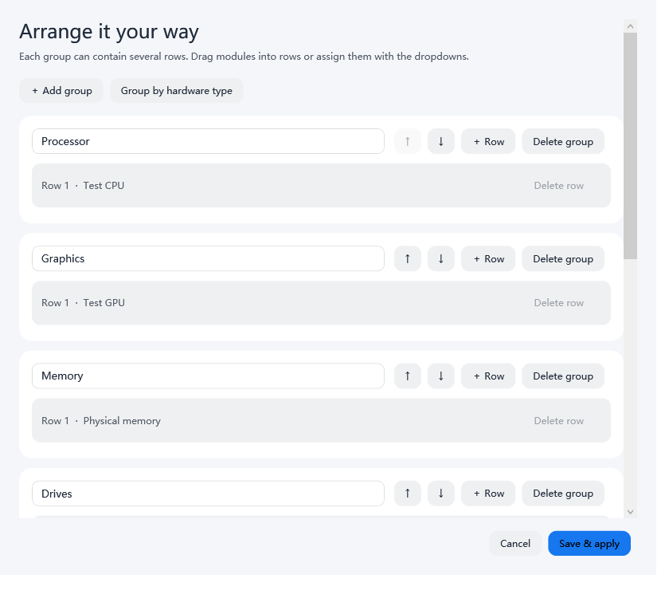
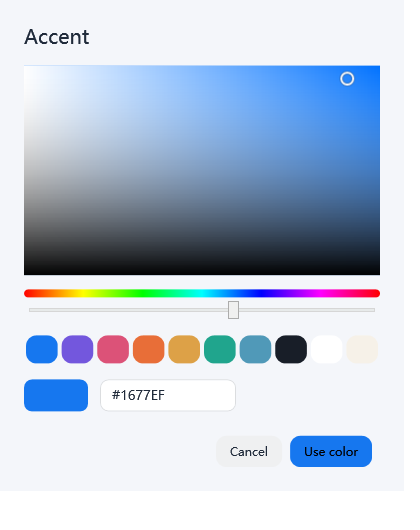

电脑参数
CPU、GPU、内存、硬盘、分区、网卡。占用、容量、温度与可用传感器，按你喜欢的顺序排列。
从 CPU 到网络，从完整仪表板到任务栏。
把你关心的信息，放在刚刚好的位置。
Windows x64 · 当前版本免费使用 · 安装包内置运行环境

实际 Windows 界面 · 示例数据；界面支持中文与英文
CPU、GPU、内存、硬盘、分区、网卡。占用、容量、温度与可用传感器，按你喜欢的顺序排列。
按 CPU、GPU、内存、网络流量或估算能耗排序。搜索、打开、结束进程，都在同一处。
自定义分组与多行，模块宽度 1–4 格。每个模块独立选择字段、曲线与采样频率。
上传、下载、链路占用与延迟；通过 Ping0 查看公网 IP、地区、ASN 和运营商。网速与公网查询独立刷新。
完整仪表板、紧凑面板、真正的 Windows 任务栏。三种模式独立选择内容，颜色保持协调。

浅色或深色，整套配色或自选色盘。调整字体、字号和对齐，给每一行起个喜欢的名字。


当前主要版本。x64 安装包，包含运行环境；安装位置和数据位置均可选择，默认数据放在安装目录的 Data 中。
下载 EXE · 65.4 MB ↓版本说明与 SHA-256 校验 →面向 macOS 13+，尚未实机验证，功能仍不完整。温度、各程序 GPU/网络流量、菜单栏文字等尚未完成，不建议作为主要监控工具。
预览版范围与已知缺项 →当前安装包未获得正式发布者签名认证，Windows 和 macOS 可能显示安全提示或阻止运行。Windows 监控需管理员权限；部分温度需要另装官方签名的 PawnIO 驱动。软件不会关闭系统防护。传感器取决于硬件支持，程序能耗是估算值，结束进程可能丢失未保存内容。
当前版本可免费安装运行，包括个人和企业内部使用。核心源码不公开；未经另行授权，不得修改、再分发或售卖牛牛原创部分。未来版本可有不同收费与许可条款。第三方组件遵循各自许可证。
本地监控与设置保存在你的电脑。开启公网信息查询会请求 Ping0，默认启动时和每 10 分钟查询一次，可关闭或调整；延迟检测会联系你设置的目标。GitHub 托管网站和下载文件，本页面未添加第三方分析脚本。
Windows 可自选数据目录，升级保留原配置，卸载保留个人数据。Mac 预览版首次启动可选择数据目录，默认位于用户的 Library/Application Support/NiuNiu/Data，独立于应用程序包。
欢迎到 GitHub Issues 描述系统版本、操作步骤与现象。提交截图或日志前请先移除个人信息和密钥。 提交反馈 ↗